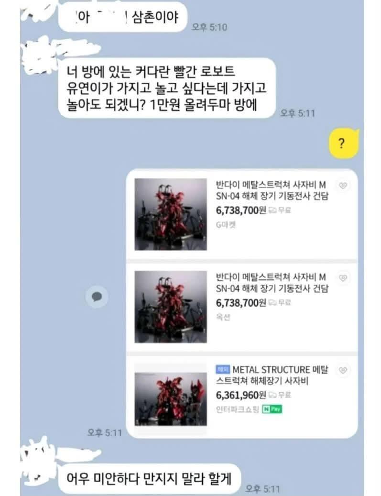
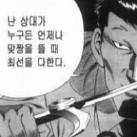

명절날 대참사 날뻔함
댓글

삼촌이 아니라 이모엿으면 결과가 달랐을듯 ㅋㅋㅋㅋㅋ
삼촌 상위 1%...
망가지면 삼촌돈으로 물어줘야하기때문
매번 고구마 사연만 보다 정말 오랜만에 보는 상식적인 사연 추
수집취미 있는 사람이 모아둔 물건은 대부분 비싸다
메탈스트럭쳐는 돈있어도 못사는거 아니었나
670이면 후덜덜하지 ㅋㅋㅋㅋ
왜 남의 물건에 그렇게 손대려고 하지
안건들면 되잖아
그래도 저정도면 빠르게 사과하고 냅두잖음 ㅋㅋㅋㅋ
어미만말할 ㄷㄷ
건하하하하하하하하
삼촌이니까 미리 말이라도 했지 이모였으면 부숴버렸던다 미안하다 남기고 집에서 사라져있음
아무리 생각해도 삼촌인 새끼가 저 정도 크기와 디테일을 보고 만원 드립 못칠거 같은데
좆주작
판단력 굿
메스사자비는 실제로 보면 딱봐도 엄청 비싸보여서 못만지게 할껄 ㅋㅋ
사전허락이면 상위 10%
미리 허락을 구함
공짜도 아님 비용 지불 의사도 있음
바로 수용후 적절한 조치를 취함
상위 0.1퍼 삼촌
삼촌이라 해결 완료
현명하십니다 삼촌
만원은 그냥 올려두십쇼 관람료입니다.
ㅋㅋㅋㅋㅋㅋㅋㅋㅋㅋ